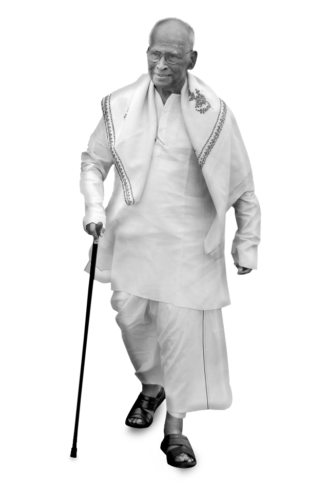

Kumaraguru College of Technology (KCT), Coimbatore is a private Engineering College started in 1984 under the auspices of Ramanandha Adigalar Foundation, a charitable educational trust of Sakthi Group. Situated in a sprawling 156-acre campus in the IT corridor of Coimbatore, KCT is an autonomous institution affiliated to the Anna University, Chennai and approved by All India Council for Technical Education (AICTE). KCT has been accredited by National Assessment and Accreditation Council (NAAC) with Grade ‘A’ and all the eligible UG. The able guidance and patronage of Arutselvar Dr. N.Mahalingam, Founder, Sakthi Group along with the efficient administration of Dr.B.K.Krishnaraj Vanavarayar, Chairman, the resourcefulness of Sri. M.Balasubramaniam, Correspondent and the foresightedness of Sri. Shankar Vanavarayar, Joint Correspondent have equipped the college with excellent facilities such as spacious classrooms, seminar halls, well-equipped laboratories, excellent sporting amenities, dedicated high-speed internet connectivity (broadband) and well-qualified faculty.
